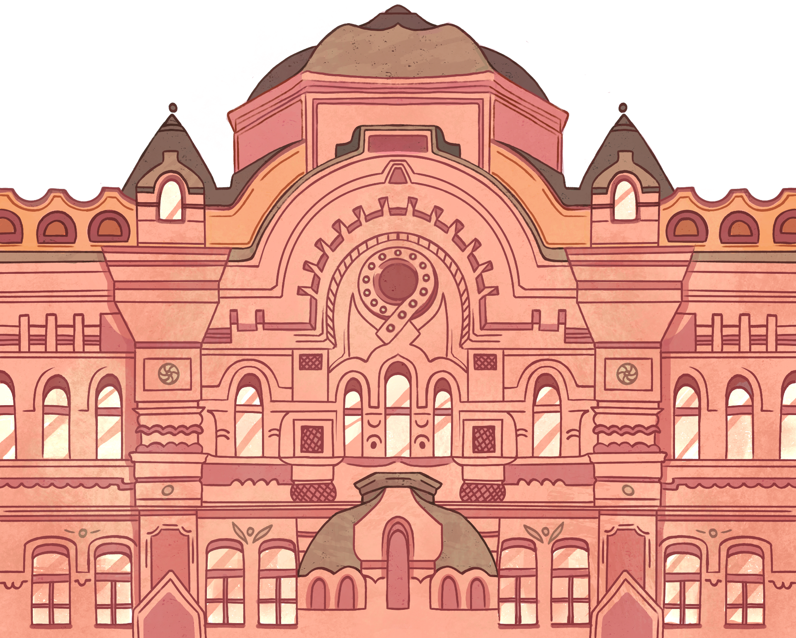
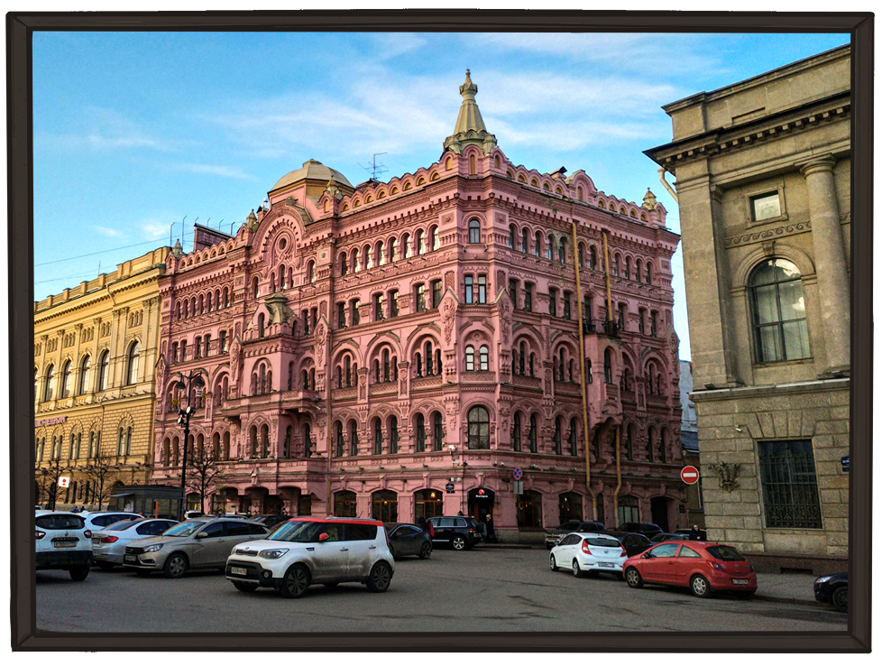
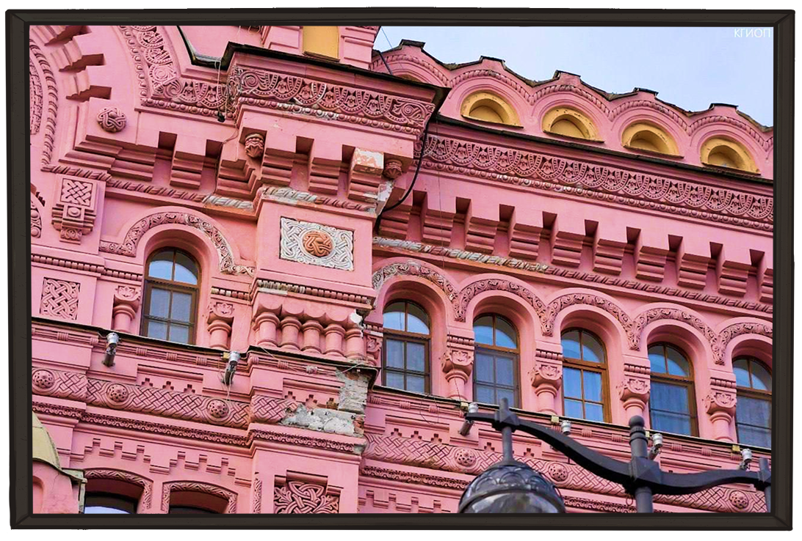
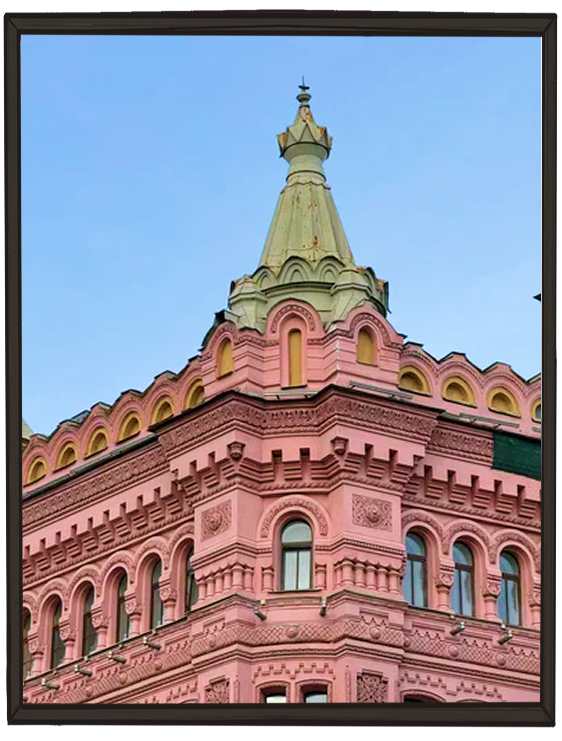
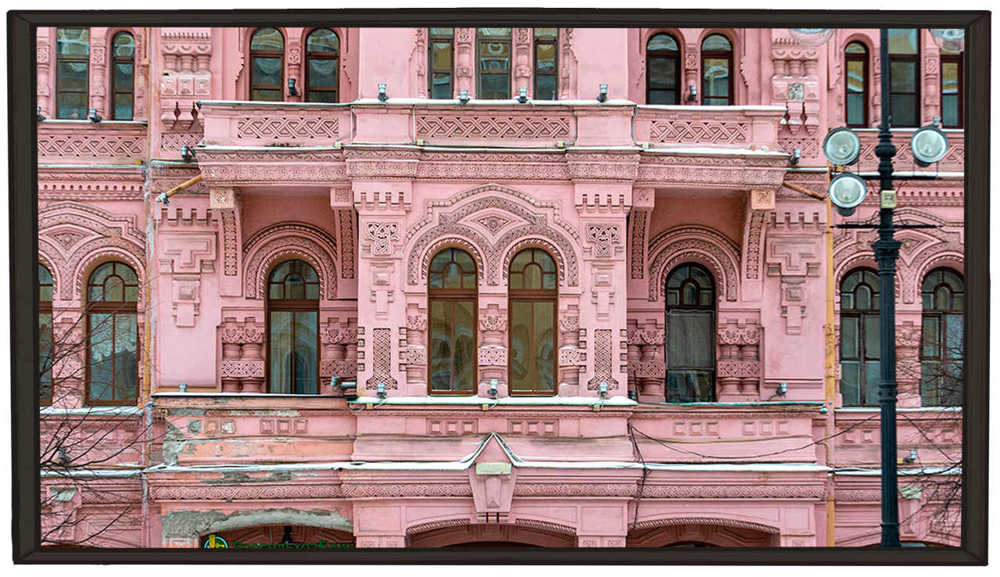
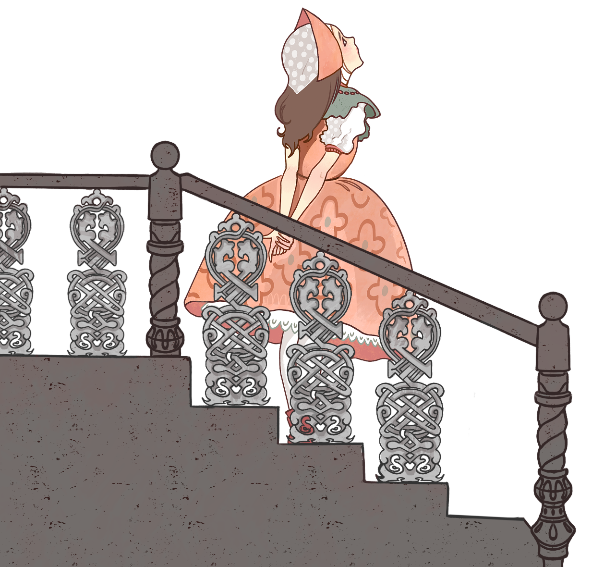

О ДОМЕ
В 1879 году на площади Островского выросло необычное здание — розовое, как зефир, с башенками и резными наличниками. Поговаривали, что архитектор вдохновлялся при его строении русскими народными сказками. Его фасад похож на нежный рушник, расшитый бисером, а цвет придаёт ему сходство со сказочным кукольным домиком
ГАЛЕРЕЯ




